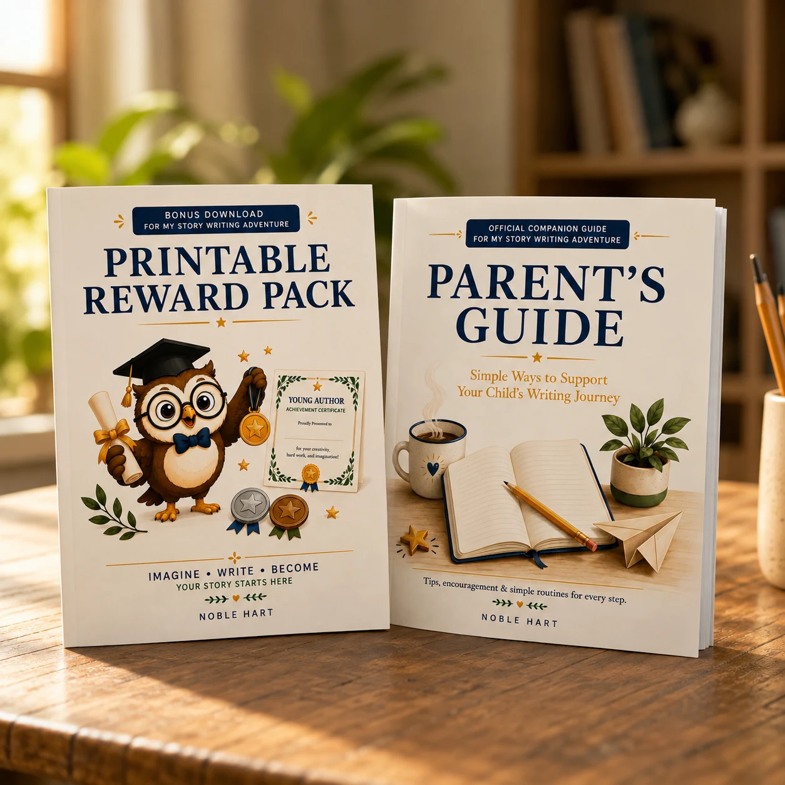

Parent & Teacher Guide
- How the journal is structured
- Ways to encourage independent writing
- Ideas for celebrating effort and progress
- Helpful guidance for supporting a young writer
Free resources created to complement My Story Writing Adventure and make the writing journey easier to encourage at home or in the classroom.
These resources are designed to sit alongside the book—not replace the writing practice inside it. They give parents and teachers practical support while giving young writers ways to celebrate progress.
A simple guide to help adults understand the journal, encourage children without taking over, and create a positive writing routine.
Printable rewards designed to celebrate writing progress, including achievement certificates, stars, and reward badges.
The free resources are intended to make the Book 1 experience more encouraging for both children and the adults supporting them.
Grab both free resources instantly — the Parent & Teacher Guide and the Young Author Reward Pack, delivered straight to your inbox.
Get the Free Resources
More free Noble Hart resources will be added as the world grows.